Real-Time Observability
Stop Guessing Why
Your SLAs Break
Chiron delivers instant alerts when SLAs breach—with the exact root cause, not just symptoms. No more log diving, no manual correlation, no wasted hours.
90%
Cost Reduction
10x
Faster Resolution
<5min
Setup Time
